图 50.1 响尾蛇在运动 响尾蛇是依靠收缩肌肉作用于骨骼而实现运动的。如果没有肌肉和骨骼，这种复杂的运动是不可能实现的。
植物和真菌类的运动形式只有生长，或者在水和风的作用下被动地运动。在三个多细胞生物界中，只有动物能够通过运动主动地探索环境。本章，我们就来研究一下动物是如何通过肌肉连接硬骨而实现运动的。响尾蛇（图 50.1）通过有节奏地收缩肌肉摇摆身子在沙上滑行。人依靠收缩腿部肌肉行走。虽然本章的重点是讨论脊椎动物，但是从本质上讲所有的动物都是凭借肌肉运动的。当蚊子飞行时，它依靠快速收缩飞行肌 (flight muscle) 扇动翅膀；当蚯蚓在泥土中蠕动时，它依靠肌肉推动身体穿过泥土而向前运动。
动物通过肌肉作用于骨骼而完成运动。动物界存在3种骨骼：流体静力骨骼、外骨骼和内骨骼。
(1) 流体静力骨骼 (hydrostatic skeleton)：一般存在于身体柔软的无脊椎动物，如蚯蚓和水母。在这种动物体中，充满液体的体腔被肌纤维环绕。当肌肉收缩时，液体在体腔内流动，改变体腔的形状。以蚯蚓为例，环肌先顺序收缩，压迫体腔的每一段，体腔内的液体推动身体前进。纵肌再收缩，拉动后部的身体向前（图 50.2）。
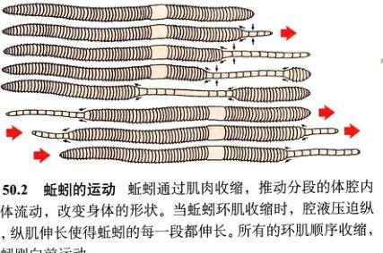图 50.2 蚯蚓的运动 蚯蚓通过肌肉收缩，推动分段的体腔内液体流动，改变身体的形状。当蚯蚓环肌收缩时，腔液压迫纵肌，纵肌伸长使得蚯蚓的每一段都伸长。所有的环肌顺序收缩，蚯蚓则向前运动。
(2) 外骨骼 (exoskeleton)：作为一个坚固的外壳包裹整个机体。节肢动物，如甲壳类动物和昆虫，都具有由一种多聚糖——几丁质 (chitin) 形成的外骨骼（图 50.3a）。外骨骼对内脏器官起重要的保护作用，并能够防止机体受到扭曲伤害。但是，为了生长，动物必须定期蜕皮。在蜕皮期间，动物十分脆弱的，因为旧的外骨骼被脱掉了，所以很容易受到攻击，此外外骨骼还限制了动物体形的大小。具有外骨骼的动物，体形都不大。因为，为了保证外骨骼的形状不被破坏，随着动物体的长大，外骨骼将变得越来越厚，越来越重。如果有一种昆虫像人一样大，那么它的外骨骼的厚度和质量将使它完全无法运动。
(3) 内骨骼 (endoskeleton)：存在于脊椎动物和棘皮动物体内，肌肉附着其上。脊椎动物的外表富含柔韧性，可适应骨骼的移动。脊椎动物的内骨骼由软骨和硬骨组成。与几丁质不同，骨骼是由细胞组成的活组织。它可以生长、自我修复，并且可以通过自我重组 (remodeling) 适应外界施加的不同应力。
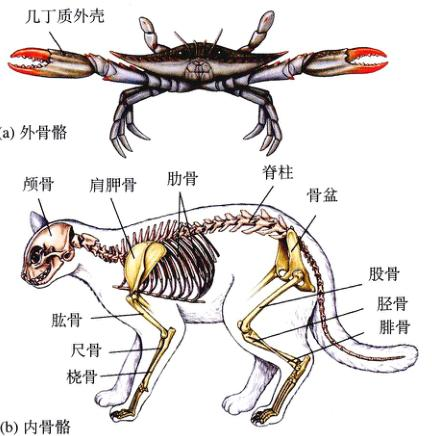图 50.3 外骨骼和内骨骼 (a) 像这只蟹一样，节肢动物坚硬的“外套”就是它的外骨骼。(b) 脊椎动物，如这只猫，具有内骨骼。中轴骨用桃红色的阴影表示，附肢骨用黄色的阴影表示。一些主要的骨已在图中标出。
脊椎动物的内骨骼（图 50.3b）分为中轴骨 (axial skeleton) 和附肢骨 (appendicular)。中轴骨组成身体的轴，起支持和保护头、颈和胸腔内脏器官的作用。附肢骨包括四肢的硬骨，由胸骨和盆骨带将其与中轴骨连接起来。
骨骼中的硬骨起支持和保护作用，并且承受骨骼肌收缩时产生的张力。细胞在骨髓中形成，钙化的硬骨基质作为钙和磷离子的储存库。
组成脊椎动物骨骼的硬骨是一种特化的结缔组织（见第49章）。在硬骨中，胶原纤维等有机物组成的细胞间质被针状的磷酸钙晶体颗粒以羟基磷灰石 (hydroxyapatite) 晶体的形式所填满。羟基磷灰石具有易碎但坚硬的性质，它使硬骨具有很大的强度。另一方面，胶原虽然具有韧性，但没有强度。所以综合二者的特性，硬骨既有强度，又有韧性。胶原在硬骨中延伸，将许多羟磷灰石晶体连接起来，使硬骨比羟基磷灰石更加不易破裂和折断。
硬骨是具有生命的活组织，它在不断地进行自我更新。硬骨由成骨细胞 (osteoblast) 生成。成骨细胞能够分泌具有胶原的有机细胞间质，之后的磷酸钙沉积在其沉淀中。
中沉积。沉积结束后，骨细胞被分别包埋在钙化的基质中——一些被称为腔隙 (lacuna) 的小空间里。还有另一类细胞，被称为破骨细胞 (osteoclast)，它们能够溶解硬骨。因此它们在硬骨响应外界应力变化而发生重组时起着重要的作用。
硬骨由薄的同心圆状的层状结构——骨板 (lamella) 所组成。这些层状结构场所包绕的狭窄的通道被称为哈佛氏管 (Haversian canal)，它们在硬骨中平行排列。哈佛氏管中含有神经纤维和血管，使骨细胞被深埋在钙化的基质中同样可以生存。同心圆状的骨板和骨陷窝中的骨细胞以及哈佛氏管构成了硬骨的基本结构单位，即哈佛氏系统 (Haversian system)。
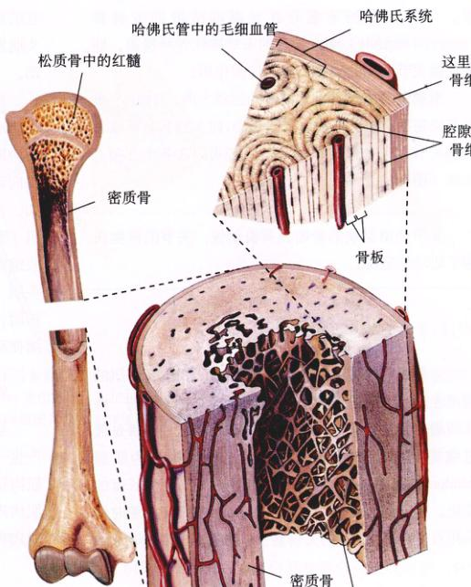图 50.4 硬骨的组织结构从三个切面显示 硬骨的有些部位是致密的，使其具有强度。另一些部位是多孔而疏松的，具有敞开的网格，大部分血细胞在其中形成。
硬骨的形成有两种途径。扁平的硬骨 (flat bone)，如头盖骨，由致密结缔组织网中的成骨细胞形成。长骨 (long bone) 是由软骨转化而来，软骨基质钙化后，随着软骨的退化，硬骨逐渐形成。最后，只有关节处和长骨颈的生长面 (growth plate) 还留有软骨。儿童能够长高就是由于生长面的软骨逐渐加厚并被硬骨所取代。当所有的生长面的软骨都被硬骨所取代时，人就停止生长了（一般在20岁左右）。从这个角度来说，只有长骨末端关节处的软骨能最终保留下来。
长骨的末端和内部由松质骨 (spongy bone) 组成，其中含有骨髓，大多数血细胞都是在骨髓中生成的（图 50.4）。包绕松质骨组织的是密质骨 (compact bone) 组成的同心层骨板，与松质骨相比更加致密。密质骨组织使硬骨具有抵抗外加应力的强度。
骨骼的运动是靠收缩肌肉实现的。骨骼肌由肌腱与硬骨相连，所以当肌肉收缩时，与其相连的硬骨就会运动。这种骨骼的运动在关节处发生。关节就是硬骨的连接处，可分为三大类：
(1) 不动关节 (immovable joints)：包括头盖骨的骨缝 (suture)（图 50.5a）。胎儿的头盖骨还没有完全形成，在硬骨之间具有一块致密结缔组织区域——卤门 (fontanel)。在分娩时，胎儿通过母体产道时，这块区域可以使头盖骨作轻微的相对移动。出生后，这些结缔组织逐渐被硬骨所取代。
(2) 半活动关节 (slightly movable joint)：指的是软骨对硬骨有过渡衔接作用的关节。脊椎动物的椎骨被垫状的软骨所隔开，这些软骨被称为椎间盘 (intervertebral disc)（图 50.5b）。这些软骨关节 (cartilaginous joint) 使脊椎骨在小范围内活动，起到缓冲的作用。
(3) 活动关节 (freely movable joints)：又称滑膜关节，因为硬骨的末端处在充满润滑液的滑膜囊 (synovial capsule) 中。硬骨的末端被软骨所覆盖。韧带连接关节两侧的硬骨，起到加固作用。
滑膜关节的结构决定硬骨的运动方向。例如，手指关节决定手指只能作铰链式的运动，而大腿与骨盆之间的关节具有球窝式结构，使得大腿可以在各个方向上运动（图 50.5c）。
骨骼肌收缩带动骨骼运动。通常情况下，骨骼肌的两端连接在不同的硬骨上（有些情况，肌纤维的一端或两端也会连在其他结构上，如皮肤）。这种连接是通过致密结缔组织带完成的，这种结构称为肌腱 (tendon)。肌腱具有弹性，会在肌肉收缩时产生长度的变化。肌肉的一端——起点 (origin) 在肌肉收缩时保持相对静止。而肌肉的另一端——附着点 (insertion) 所在的硬骨在肌肉收缩时发生运动。例如，当上臂的肱二头肌发生收缩时，前臂（肌肉止点）向肩（肌肉起点）运动。
在一个关节上引起同一动作的肌肉称为协同肌 (synergists)。例如，人的股四头肌中的不同肌肉就互为协同肌：它们都能起到伸展膝关节的作用。能引起反向动作的肌肉称为拮抗肌 (antagonistic muscle)。例如，使关节弯曲的肌肉就是使关节伸展的肌肉的拮抗肌（图 50.6a）。在人体上，当腘肌 (hamstring muscle) 收缩时，引起膝盖弯曲（图 50.6b）。因此，腘肌和骨四头肌 (quadriceps) 互为拮抗肌。通常，当进行某一动作时，对该动作的肌肉处在松弛状态。因此，腘肌收缩使膝盖弯曲时，股四头肌则处在松弛状态。
当肌肉收缩时，为了使肌纤维缩短，肌肉就一定要产生一个张力，这个张力应大于施加于肌肉止点而阻止肌肉运动的力。例如，当你收缩肱二头肌举起一重物时，肌肉产生的张力大于你所举物体的重力。这种情况下，肌肉和所有的肌纤维都会缩短。这种收缩被称为等张收缩 (isotonic contraction)，因为在肌肉收缩过程中肌肉产生的张力相对不变。
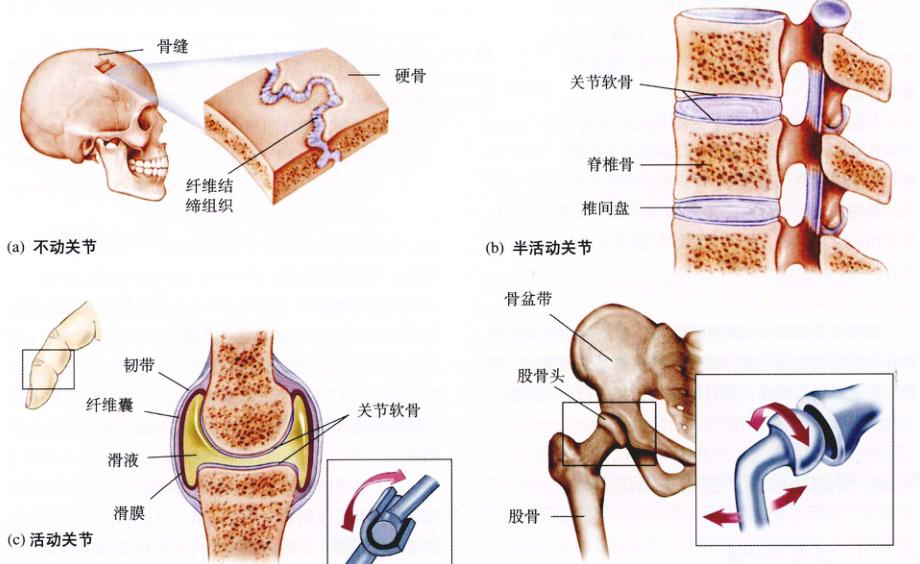图 50.5 三种类型的关节 (a) 不动关节包括头盖骨的骨缝。(b) 半活动关节包括椎骨之间的软骨关节。(c) 活动关节又称滑膜关节，如指关节和髋关节。
图 50.6 腿部的屈肌和伸肌 (a) 互为拮抗的肌肉作用于外骨骼产生运动，例如蝗虫的跳跃。胫节的屈肌收缩，将胫节拉向股节一侧。胫节的伸肌收缩，使步足伸直，将昆虫推向空中。 (b) 互为拮抗的肌肉也可以作用于内骨骼。在人体内，腘肌（由 3 块肌肉组成）能够产生屈膝作用，而股四头肌（由 4 块肌肉组成）能够使膝关节伸展。
肌肉收缩，但产生的张力由肌腱和与肌肉相连的其他弹性组织所承受，肌肉的长度不变。这种收缩叫做等长收缩 (isometric contraction)。等长收缩一般发生在肌肉的收缩期，但它在稳定体态和保持一定紧张度中发挥作用。
正如第49章所描述的，每一块骨骼肌包含有许多的肌纤维 (muscle fiber)。每一条肌纤维由 4~20 条伸长的肌原纤维 (myofibril) 组成。而每条肌原纤维又由粗肌丝 (thick myofilament) 与细肌丝 (thin myofilament) 构成（图 50.7）。肌纤维是有条纹的（具有交替的条带），因为肌原纤维是有条纹的，分为明带和暗带。这种带状的模式是由肌原纤维内部肌丝的排列形成的。一束粗肌丝聚集在一起形成暗带，称为 A 带 (A band)；而细肌丝单独地出现在明带当中，明带又称 I 带 (I band)。
肌原纤维中每一条 I 带都被蛋白质组成的盘一分为二，而蛋白质盘则称为 Z 线 (Z line)，因为它只有在电镜下才能观察到。细肌丝被固定在形成 Z 线的蛋白质盘上。在电镜下观察肌原纤维（图 50.8），你将观察到在肌原纤维上不断重复着从一条 Z 线到另一条 Z 线的相同结构。这种结构被称为肌小节 (sarcomere)，它是肌肉收缩的最小亚单位。
细肌丝从 A 带的两侧插入到粗肌丝束当中，但是，当肌肉处在松弛状态时，细肌丝是不会深入到 A 带的中部的。所以，由于粗肌丝肌丝的交错和重叠，A 带的中部 [又称 H 带 (H band)] 颜色要比两端稍亮。当肌肉收缩时，肌小节的外观将发生变化。
肌肉能够收缩是由于肌原纤维能够收缩。当肌原纤维收缩时，肌丝的长度不会改变，但细肌丝会向 A 带的深处滑动（图 50.9）。这使 H 带变窄，直到最后消失。细肌丝的滑动同样会使 I 带变窄，因为深色的 A 带被拉近了。这就是肌肉收缩的肌丝滑行机制 (sliding filament mechanism)。
电镜照片显示许多的横桥 (cross-bridge) 从粗肌丝延伸到细肌丝。这一结构恰好可以解释肌丝滑行机制。想要理解滑行过程是如何完成的，就要先从分子水平上研究粗细肌丝。生化研究表明，每一条粗肌丝都是由许多的肌球蛋白 (myosin) 所组成的，每一个肌球蛋白分子都有一个膨大的球状的“头”从粗肌丝中向外突出
图 50.7 骨骼肌的构成 每一块肌肉由许多肌细胞或肌纤维形成的束状结构构成，每一个肌纤维由许多肌丝形成的肌原纤维构成。
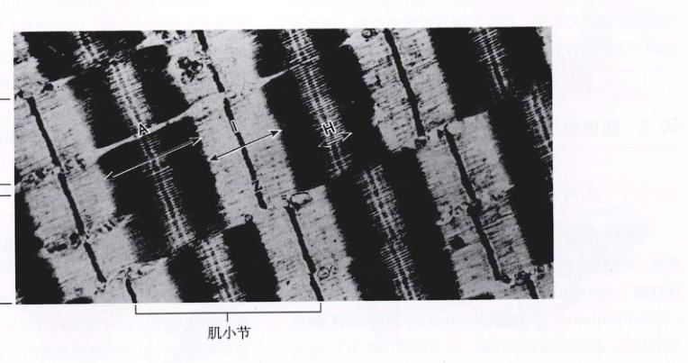图 50.8 骨骼肌纤维的电镜照片 作为肌小节分界的 Z 带在每一条肌原纤维中可以清楚地看出。粗肌丝组成 A 带；I 带中的细肌丝插入 A 带，与粗肌丝交错重叠在一起。在 A 带中部区域，粗肌丝没有交叠，所以该区域显得颜色较浅。这就是 H 带。
图 50.9 肌丝滑行机制的电镜照片(a) 和模式图(b) 随着细肌丝向肌小节中部深处滑动，Z 线被拉近。(1) 处在松弛状态的肌肉。(2) 部分收缩 (partially contracted) 的肌肉。
（图 50.10）。这些肌球蛋白的头形成了电镜照片中粗肌丝的横桥。生化研究也表明每一条细肌丝主要由许多球状的肌动蛋白 (actin) 组成弯曲的双螺旋结构（图 50.11）。这样，我们就可以从分子水平上认清肌小节，正如图 50.12a 所描述的那样。
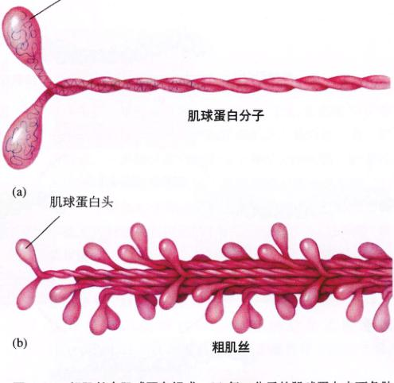图 50.10 粗肌丝由肌球蛋白组装而成 (a) 每一个分子的肌球蛋白由两条肽链相互缠绕而成。每条链的一端都具有一个称作“头”的球状部。 (b) 肌球蛋白结合成束形成粗肌丝。球状部以一定的间隔从粗肌丝中向外突出。
在肌球蛋白的头与细肌丝的肌动蛋白结合之前，横桥起着 ATP 酶的作用，可以将 ATP 水解为 ADP 和 Pi。这恰好激活肌球蛋白的头，使之与肌动蛋白结合形成横桥。肌球蛋白与肌动蛋白的结合，使二者发生形象的改变，横桥的摆动使细肌丝向肌小节中心滑行（图 50.12b）。横桥摆动做功后会与另一分子 ATP 结合，这使得肌球蛋白与肌动蛋白解离，并继续下一个周期的横桥循环 (cross-bridge cycle)（图 50.13）。只要肌肉受到刺激进行收缩，这种循环就不会断重复下去。
机体死亡后，细胞不再提供 ATP，因此横桥
图 50.11 细肌丝由球状的肌动蛋白组成 两条肌动蛋白链扭曲成螺旋结构，形成细肌丝。
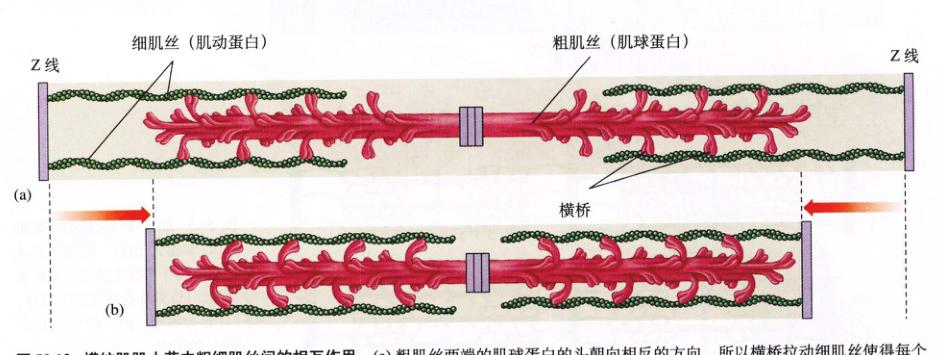图 50.12 横纹肌小节中粗细肌丝间的相互作用 (a) 粗肌丝两端的肌球蛋白的头朝向相反的方向，所以横桥拉动细肌丝使得每个肌小节的 Z 线向肌小节中心移动。(b) 这种肌丝的滑行导致肌肉收缩。
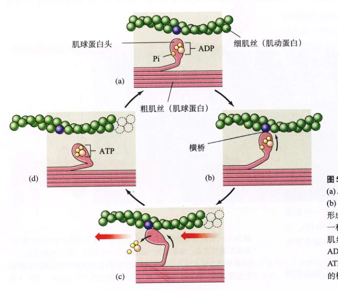图 50.13 肌肉收缩中的横桥循环 (a) ADP 和 Pi 与肌球蛋白的头结合。(b) 头部构象改变，使之与肌动蛋白结合形成横桥。(c) 结合使肌球蛋白的头变为一种更加弯曲的构象，拉动细肌丝沿粗肌丝运动（图中向左运动），并且释放 ADP 和 Pi。(d) 头部结合 ATP 使横桥解离，ATP 水解为 ADP 和 Pi，使头部回到最初的构象，继续下一周期的循环。
就能解离。这是引起死后肌肉僵直，又称尸僵 (rigor mortis) 的原因。而活细胞一般都会有足够的 ATP 使球蛋白头部（即横桥）与肌动蛋白解离。但是，如何让横桥循环停止而使肌肉松弛呢？调节肌肉的收缩和松弛还需要其他的蛋白，我将在下一节进行讨论。
当肌肉处在松弛状态时，肌球蛋白的头从粗肌丝中向外突起，随时准备水解 ATP，但是它不能和肌动蛋白结合。这是因为肌动蛋白上与肌球蛋白的结合位点被肌丝中另一种称为原肌球蛋白 (tropomyosin) 的蛋白质结合。原肌球蛋白，促进肌肉，在松弛的肌肉中，横桥不能形成，细肌丝也不能滑动。
要使肌肉收缩，就要使原肌球蛋白移开，使肌球蛋白和肌动蛋白结合。这一过程需要肌钙蛋白 (troponin) 的作用。肌钙蛋白是一种结合在原肌球蛋白上的调节蛋白。肌钙蛋白和原肌球蛋白结合形成复合物，并受肌细胞质中 Ca²⁺ 浓度的调节。
当细胞质中 Ca²⁺ 浓度较低时，原肌球蛋白阻碍横桥的形成，肌肉处于松弛状态（图 50.14）；当 Ca²⁺ 浓度升高时，Ca²⁺ 与肌钙蛋白结合，促使肌钙蛋白-原肌球蛋白复合物与肌动蛋白的结合位点分离，暴露出肌动蛋白上与肌球蛋白的结合位点。于是肌球蛋白头部与肌动蛋白结合形成横桥，经历一个动力行程 (power stroke)，产生肌肉收缩。
Ca²⁺ 是从哪里来的呢？Ca²⁺ 储存在肌纤维中特殊的内质网——肌质网 (sarcoplasmic reticulum, SR) 中（图 50.15）。当肌肉受到刺激开始收缩时，电冲动传入肌纤维中的横管 (T管) (transverse tubule, T tubule)，引发 SR 释放 Ca²⁺。Ca²⁺ 在肌原纤维中扩散，与肌钙蛋白结合引起收缩。肌肉的收缩受到神经活动的调节，所以神经活动一定能影响肌纤维中 Ca²⁺ 的释放。
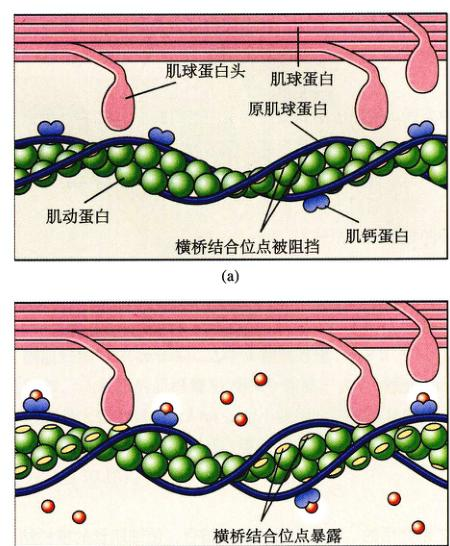图 50.14 钙离子是如何调控横纹肌的收缩 (a) 当肌肉处在松弛状态时，长丝状的原肌球蛋白将肌动蛋白上与肌球蛋白的结合位点阻挡起来。因为肌球蛋白不能与肌动蛋白结合形成横桥，肌肉收缩不能发生。(b) 当 Ca²⁺ 与另一种蛋白质——肌钙蛋白结合后，Ca²⁺-肌钙蛋白复合物使原肌球蛋白位置发生移动，暴露出肌动蛋白上与肌球蛋白的结合位点，于是形成横桥，产生肌肉收缩。
肌肉在运动神经的刺激下发生收缩。与平滑肌和心肌不同，控制骨骼肌运动的特定的运动神经元称作躯体运动神经元 (somatic motor neuron)。躯体运动神经元的轴突（图 49.12）从神经元细胞体延伸出来，末端分支与多条肌纤维形成突触 (synapses)。我们在第54章详细地讲解突触。一个轴突能够刺激多条肌纤维，在一些动物中，一条肌纤维可能受多个神经元的控制。但是在人体内，每条肌纤维只与一条轴突的分支形成突触。
一个躯体运动神经元产生电化学冲动，它将通过以下的方式刺激受它控制的（与之形成突触的）肌纤维，使其收缩：
(1) 运动神经元在其与肌肉形成的突触部位，即神经肌肉接头，释放一种化学物质，称作神经递质。躯体运动神经末梢释放的神经递质是乙酰胆碱 (acetylcholine, ACh)。乙酰胆碱能够作用于肌纤维膜，刺激肌纤维自身产生电化学冲动。
(2) 冲动沿肌纤维膜在肌纤维上扩散，并通过 T 管深入到肌纤维内部。
(3) T 管将冲动传至肌质网，肌质网释放 Ca²⁺。正如
图 50.15 肌原纤维、横管和肌质网的关系 冲动沿运动神经元轴突传导，通过轴突与肌纤维形成的突触，冲动传至横管并继续沿横管传导，刺激肌质网将 Ca²⁺ 释放入细胞质中。Ca²⁺ 扩散至肌原纤维引起收缩。
之前介绍的，Ca²⁺ 与肌钙蛋白结合，使细肌丝的横桥结合位点暴露出来，从而引发肌肉收缩。
当神经冲动停止时，神经末梢停止释放 ACh。从而使肌纤维中的冲动产生停止。同时，T 管也不再向肌质网传导兴奋冲动，Ca²⁺ 通过主动转运被回收肌质网中。Ca²⁺ 与肌钙蛋白解离，原肌球蛋白恢复到阻碍横桥形成的状态，于是肌肉变为松弛状态。
Ca²⁺ 参与的肌肉收缩过程称为兴奋-收缩耦联 (excitation-contraction coupling)，因为 Ca²⁺ 的释放将运动神经元引起的肌纤维兴奋与肌肉的收缩联系起来。
一条肌纤维对于刺激的反应是全或无式的，而整块肌肉的反应则取决于参与反应的肌纤维数。由一条轴突的全部分支所支配的所有肌纤维被定义为一个运动单位 (motor unit)（图 50.16）。当一个运动神经元产生冲动时，受它支配的运动单位中所有的肌纤维一起收缩。每一个运动单位可以分离，单独工作，而运动单位的数量和大小，决定了肌肉的收缩能力。它对于调整骨骼肌的运动具有很重要的作用。肌肉具有的控制能力越好，它所拥有的运动单位就越小（每一个神经元所控制的肌纤维越少）。相反，运动单位大的肌肉虽然控制能力较差，但能够产生更大的张力。例如，控制眼动的肌肉中的每一个运动神经元所控制的肌纤维就很少，而腿上的肌肉中的每一个运动神经元控制上百条肌纤维。
大多数肌肉中都含有控制不同数量级纤维的神经元。神经系统可以有选择地控制这些神经元。肌肉最微小的
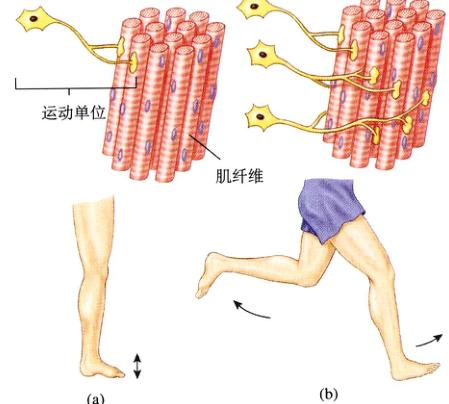图 50.16 运动单位的数量和大小 (a) 产生张力较弱，运动较精细的肌肉收缩依赖靠较少和较小的运动单位。(b) 大而有力的运动则需要更多更大的运动单位。
收缩只是由几个较小的运动单位的活动所引起的。如果需要收缩稍微加强一些，就会有几个小的运动单位开始活动。所以最初产生的肌肉张力的增加是比较小的。但如果需要较大的张力，较大的运动单位就会开始活动，使张力增加。神经系统通过增加激活的运动单位的数量和大小来增加肌肉收缩的强度，这种方式被称为募集 (recruitment)。
在处于松弛状态的肌肉中，横桥由于受到原肌球蛋白的阻碍而不能与肌动蛋白结合。只有当 Ca²⁺ 从储存它的肌质网中释放出来并与肌钙蛋白结合时，引起原球蛋白在细肌丝中位置移动，这时肌肉才能发生收缩。神经元刺激肌肉收缩。不同大小和数量的运动单位的活动引起不同类型的肌肉收缩。
一条单独分离出来的骨骼肌可以通过对其施加人工电击刺激的方法进行研究。如果对一块肌肉进行一次单独的电击刺激，肌肉将表现出快速的收缩和松弛，称为一次单收缩 (twitch)。增加电击刺激的电压可以增加收缩的强度，直至一个最大值。对肌肉施加持续一秒的电击刺激，会引起持续一秒的收缩，而且每一次都是在前一次的基础上发生的。这种积累的作用被称为叠加 (summation)（图 50.17）。
如果自动地施加频率不断增加的电击刺激，两次相邻的收缩之间的休息时间就会越来越短，而收缩的强度则会越来越大。当电击的频率达到一定的值后，连续的收缩之间就几乎没有间歇了，收缩变得平稳而持续，正如正常的肌肉在体内工作时一样。这种平稳而持续的收缩被称为强直收缩 (tetanus)。
骨骼肌纤维可以根据收缩速度分为慢收缩肌纤维 (slow-twitch)，又称 I 型肌纤维 (type I, fiber) 和快收缩肌纤维 (fast-twitch)，又称 II 型肌纤维 (type II, fiber)。例如，动眼肌的肌纤维中大部分属于快收缩肌纤维，达到最大张力只需 7.3 ms；而小腿后面的比目鱼肌大部分则由慢收缩肌纤维组成，需要 100 ms 才能到达最大张力（图 50.18）。
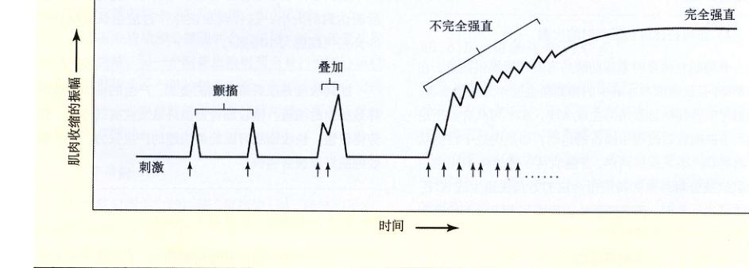图 50.17 肌肉单收缩的叠加产生持续的强直收缩 当肌肉受到电刺激或受到神经元刺激时会发生这种情况。强直，指稳定而持续的收缩，是人体中经常出现的一种收缩形式。
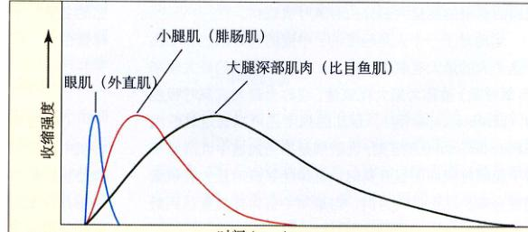图 50.18 骨骼肌具有不同组分的快收缩肌纤维和慢收缩肌纤维 动眼肌具有大量的快收缩肌纤维，而小腿的比目鱼肌则具有大量的慢收缩肌纤维。腓肠肌则在二者之间。
像比目鱼肌这样的肌肉必须具有长时间持续收缩而不疲劳的能力。这类肌肉的抗疲劳性被证明与慢收缩肌纤维的另外一些特性有关。慢收缩肌纤维具有很强的有氧呼吸能力，因为慢收缩肌纤维具有丰富的毛细血管、大量的线粒体和有氧呼吸的酶，并且具有高浓度的肌红蛋白 (myoglobin)。肌红蛋白是一种红色色素，和红细胞中的血红蛋白相似。它与氧的高亲和性决定了其向慢收缩肌纤维的运输。慢收缩肌纤维由于具有高浓度的肌红蛋白，因此又被称为红色肌纤维，即红肌。
较粗的快收缩肌纤维与慢收缩肌纤维相比具有较少的毛细血管、线粒体以及肌红蛋白，因此这种肌纤维又被称作白色肌纤维 (white fiber)，即白肌。快收缩肌纤维适合于无氧呼吸，因为其中储备了大量的糖原和高浓度的糖酵解酶。快反应肌纤维可以快速产生张力，并且可以通过力量训练变得更粗、更有力。在鸡肉或火鸡肉中看到的深色的肉和颜色较浅的肉，其主要组成就分别为红肌和白肌。
人体中还有一种介于两者之间的肌纤维，它既具有快速收缩能力，又具有很强的有氧呼吸能力，因此这种肌纤维不易疲劳。通过耐力训练可以增加肌肉中这种肌纤维的比例。
骨骼肌在休息时靠脂肪酸的有氧呼吸提供能量。在工作期间，肌糖原和血液中的葡萄糖也被作为能量来源。细胞呼吸获得的能量用来生成 ATP，ATP 则具有如下用途：①肌肉收缩过程中横桥的运动；②肌肉处于松弛状态时将 Ca²⁺ 泵入肌质网中。骨骼肌可以通过将 ADP 和由磷酸肌酸分解而来的磷酸根合成的方法快速生成 ATP。而在肌肉休息时，磷酸肌酸是由肌酸和 ATP 分解成的磷酸键结合而成。
骨骼肌在中度或剧烈运动的前 45~90 s 作无氧呼吸。心肺系统需要通过这段时间充分地提高运动肌肉中氧的供应。如果肌肉作中度运动，则运动开始的 2 min 之后该肌肉的所需的能量大部分由有氧呼吸提供。
运动对于一个人是轻度的、中度的还是剧烈的取决于这个人的最大有氧运动能力。机体消耗氧的最大速率（有氧呼吸）被称为最大耗氧量，或称为最大有氧呼吸能力 (aerobic capacity)。运动的强度还可以通过乳酸阈 (lactate threshold) 来定义。乳酸阈是指当血液中乳酸水平由于无氧呼吸而明显升高时，机体耗氧量对最大耗氧量的百分率。以正常人为例，当运动中机体耗氧量达到最大耗氧量的 50%~70% 时，血液中将有大量的乳酸出现。
肌肉疲劳 (muscle fatigue) 是指肌肉产生张力能力的下降。肌肉疲劳的原因目前还没有研究得很清楚。但在一般情况下，肌肉疲劳与肌肉运动中产生的乳酸有关。乳酸由葡萄糖的无氧呼吸产生，而葡萄糖则来自肌糖原和血液。因此，乳酸的产生和肌肉疲劳都与肌糖原的损耗相关系。
因为肌糖原的损耗限制了运动，所以任何节约肌糖原的适应都能够提高机体的耐力。受过良好训练的运动员体内的脂肪酸的有氧呼吸产生能量的效率就比较高，因此肌糖原储备的消耗就比较慢。通过体育锻炼可以增加脂肪酸的有氧呼吸产生能量的效率。由于受过耐力训练的运动员与没受过训练的人相比，有氧呼吸能力更强，所以运动员可以在由于乳酸生成和糖原损耗引起肌肉疲劳之前，进行更多的运动。
耐力训练不能增加肌肉的大小。想要使肌肉变大，只有通过经常的高强度训练才能实现。在这类运动中，肌肉要对抗很大的阻力，例如举重。阻力训练能够通过增加肌纤维的数量和大小使缩肌纤维变得更粗。所以举重训练可以引起骨骼肌生长（由于细胞分裂和增加所能达到的大小，这种现象被称为过度生长 (hypertrophy) (细胞大小增加)）。
心肌和平滑肌的一些性质很相似，它们都存在于内脏中，一般都不受意识控制。但是心肌和骨骼肌一样属于横纹肌，也是依照肌丝滑行机制收缩。平滑肌（正如它的名字）不是横纹肌。平滑肌也具有肌动蛋白丝和肌球蛋白丝，但在细胞中的排列并不是很规则。
心肌在脊椎动物的心脏中，由横纹肌细胞组成。但心肌中横纹肌细胞的排列方式和骨骼肌中的不同，组成骨骼肌的肌细胞是长长的多核细胞，而组成心肌的细胞是短而具分支的细胞，每一个细胞具有自己的细胞核，不同的细胞间通过闰盘相互联系（图 50.19）。在闰盘处，两
图 50.19 心肌 心肌细胞形成许多分支的长链，这些长链相互联系，形成网状。相邻的细胞通过闰盘相连。
个细胞的细胞膜互相融合，这种缝隙连接 (gap junction)（第7章）贯穿两个细胞膜。缝隙连接可以使金属离子扩散通过，所以电兴奋可以由一个细胞向另一个细胞扩散。大量的相互联系的心肌细胞形成一个单一的功能单位，称为心肌 (myocardium)。电冲动在心肌层的一个特殊区域自发产生，这个区域被称作起搏点 (pacemaker)。与在骨骼肌中不同，这些冲动并不是由运动神经元中的冲动发动的，而是由心肌细胞自发产生的。冲动由起搏点通过缝隙连接向整个心肌层扩散，引起收缩。
心脏有心房肌和心室肌两个心肌层，一个接受从身体流回的血液，另一个则将血液射到全身。由于心肌层的所有细胞作为一个单位接受刺激，所以心肌不出现强直。这使心肌出现收缩和舒张交替运动，而这正是心脏泵血所必须的。
平滑肌包围中空的内脏，包括胃、肠、膀胱和子宫，以及除毛细血管以外的血管。平滑肌细胞呈长的纺锤形，每一个细胞具有一个细胞核。平滑肌细胞也具有肌动蛋白和肌球蛋白，但这些具有收缩性的蛋白质并不形成肌小节。平行排列的粗细肌丝沿对角线方向由细胞一侧延伸至另一侧。粗肌丝或与称作致密体的结构相连，或与原生质膜相连。致密体在功能上相当于 Z 线。平滑肌细胞中，粗肌丝与粗肌丝的比例是 10:1 到 15:1，而在横纹肌纤维中只有 3:1。
平滑肌细胞不具有肌质网，在收缩过程中，Ca²⁺ 由细胞外液进入胞内。在细胞质中，Ca²⁺ 与钙调蛋白结合，钙调蛋白与钙调节蛋白具有相似的结构。结合形成的 Ca²⁺-钙调蛋白复合物起酶的作用，使肌球蛋白头部磷酸化（接上一个磷酸根）。与横纹肌不同，肌球蛋白头部需要磷酸化后才能与肌动蛋白结合形成横桥。
这一机制使平滑肌细胞可以产生不同级别的张力，进入细胞质中的 Ca²⁺ 越多，细胞产生的张力越大。心脏病患者使用的某些药物能够阻碍 Ca²⁺ 进入平滑肌细胞，降低细胞的收缩能力，从而引起血管平滑肌松弛，血管舒张，减小心脏泵血的负荷。
在一些平滑肌组织中，细胞只有通过神经系统刺激才能收缩。这类肌肉形成了许多血管的管壁和眼睛的虹膜。而另一类平滑肌组织，如内脏的壁，其中的细胞能自发的产生电冲动。冲动能够通过缝隙连接向相邻的细胞传递，引起组织缓慢而持续的收缩。
无论是骨骼肌还是心肌都不能被大幅度的拉伸，因为如果肌小节中粗细肌丝不再重叠，横桥就不能形成。与横纹肌不同，平滑肌即被大幅度拉伸依然可以收缩。通过研究内脏器官可被拉伸的程度（如受孕的子宫），我们无疑可以断定这些器官是由平滑肌构成的，而非横纹肌组成。
动物的运动能力在多细胞机体中是独一无二的。运动既要有推进机制，又要有控制机制。动物使用各式各样的推进机制，大多数都需要肌肉收缩的参与以产生所需要的力量。收缩发生的数量、质量和位置由神经系统支配和调节。大型动物的运动基本上都是由附肢摆动引起的附肢运动 (appendicular locomotion)，或是由身体的波动或蠕动引起的轴向运动 (axial locomotion)。
尽管动物的运动可以有各种各样，但它们的总体原则是基本一致的。各种环境中运动的物理阻力包括引力和摩擦阻力是相同的，依据环境很难很方便地将动物的运动分成三种形式，即水中运动、陆地运动和空中运动，而且它们又有各自的运动形式。
许多水生和海洋无脊椎动物沿海床运动，它们的运动方式和陆生动物在陆地上的运动方式是相同的。扁形动物通过纤毛的运动推动自己移动，环节动物通过躯体向前滑行，水蛭通过收缩-锚定-伸展的方式爬行，螃蟹通过附肢拉动躯体行走，软体动物靠肌肉足行走，而海星用它独一无二的管足行走。
在水中直接运动，或在水中游泳是一种完全不同的运动。水的浮力减小了重力的影响。最主要的延缓运动的力是摩擦阻力，所以体形对于减小摩擦力和在水中运动产生的湍流是很重要的。
一些海洋无脊椎动物利用水压作为推进力，扇贝依靠壳的有力闭合而前进；鱿鱼和章鱼喷射海水，像海洋喷射器一样前进；而水生和海洋脊椎动物都依靠游泳运动。
游泳要靠身体或附肢划水前进。鳗鱼靠蜿蜒地扭动使它的整个身体前进（图 50.20(a)）。像鳗鱼这种扭动身体的游泳方式是依靠交替收缩其两侧的轴向肌肉组织实现的。身体的每一部分分依次划水产生的力推动鳗鱼前进。
鱼类、爬行类和两栖类动物的游泳方式与鳗鱼相似，但它们只靠扭动身体的后部前进（图 50.20(b)），有些时候只使用尾鳍。虽然这样牺牲了一些推进力，但是却使身体的前部能够发生相当的特化。
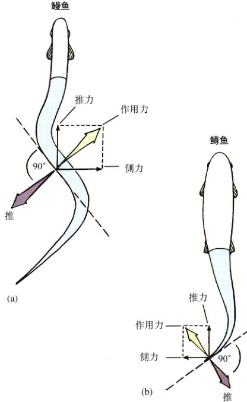图 50.20 游泳鱼类的运动 (a) 鳗鱼靠整个身体推水前进。(b) 鳟鱼靠鱼尾的后部身体推水前进。
鲸鱼同样是依靠摆动身体前进，但和其他鱼类不同，它作上下摆动，而不是左右摆动。鳗鱼和其他鱼类身体的肌肉组织有明显的节段性，这种节段性是由肌肉组织与椎骨交替结合决定的。这种结构决定了这种身体流畅的进行。鲸鱼则不能进行侧向的波动，因为哺乳动物不具有与之适应的结构。
很多四足的脊椎动物都会游泳，它们一般都是依靠附肢运动的。很多鸟类也能游泳，例如，鸭和鹅靠后肢划水推动身体前进，它们的趾间具有蹼。青蛙、龟和大多数海洋哺乳动物都是靠后肢和带蹼的足游泳的。靠前肢游泳的四足脊椎动物一般前肢特化成鳍状肢，推动它们在水中前进。这种动物包括海龟、企鹅和海狗等。还有一些陆生的四足脊椎动物，如北极熊和鸭嘴兽，它们也用前肢游泳，但它们的前肢并没有特化。
三大陆生动物——软体动物、节肢动物和脊椎动物——每一只的运动方式都各有所不同。
与其他陆生动物相比，软体动物运动的效率很低。蜗牛、蛞蝓和其他陆生软体动物分泌一层黏液，并依靠它们肌肉足推动，在黏液上滑行。
只有脊椎动物和节肢动物（昆虫、蜘蛛和甲壳类）能够快速地移动。这两类动物身体与地面分离，靠附肢或腿蹬地运动。
由于腿在提供推进力的同时还要起支持作用，所以在运动过程中要确保不将身体的重心超出腿的支持范围之外。否则，动物将失去平衡而摔倒。所以，保持运动稳定性决定了腿要按一定顺序运动，这一点对于脊椎动物和节肢动物来说是相似的。
所有陆生四足脊椎动物的基本行走模式顺序是，左后腿 (LH)，左前腿 (LF)，右后腿 (RH)，右前腿 (RF)，然后再依次重复进行。与昆虫不同，脊椎动物可以从四条腿中的任意一条开始运动，并不一定要从后腿开始。节肢动物和脊椎动物都是通过在同一侧重叠左右侧腿的运动而加快步伐的。例如，马是通过同时运动对角线方向的双腿将行走转化为小跑的。
陆生脊椎动物（如马）在以最快速度奔跑时，它的步态是不对称的。马在飞奔时最少只用两条腿支撑身体，有时会出现身体腾空。这祥就使其与地面的摩擦力减小到了一个绝对极小值，便于增加速度。由于节肢动物有大量的足，所以它们不能达到这祥高速的不对称的步态。因为这种运动会使不同的足之间相互干扰。
不是所有的动物都在陆上行走或奔跑。很多昆虫，如蚱蜢，用它们强有力的后足将身体推向空中。脊椎动
图 50.21 跳跃的动物通过后腿将身体推向空中 青蛙强有力的后腿只需 100 ms 就能由蹲态一跃而起。
物，如袋鼠、兔子和青蛙也是很好的跳跃能手（图 50.21）。
很多无脊椎动物通过蠕动的方式运动。在脊椎动物中，蛇和蚓螈 (caecilians) (无足的两栖类) 就采用这种方式运动。大多数蛇会采取将身体扭成蜿蜒的曲线的方式运动。这种运动有些像鳗鱼游泳，但只是形似而已。它的推进力并不是来源身体的波动收缩，而是整个身体收缩时受到的侧向推力。为了能够向前移动，最强壮的肌肉组织需要向反方向推动地面。因此，推力来自于蛇的身体扭曲而成的环外侧。
动物的飞行经历了大四次进化：昆虫、翼龙（绝种的飞行爬行动物）、鸟类和蝙蝠。在这四类动物中，主动飞行的方式几乎是一样的。推进力是靠向下挥动翅膀推空获得的。这种方式的运动能够提供足够的升力使昆虫停留在空中。但对于脊椎动物，由于身体比昆虫大，所以需要更大的升力。它们翅膀的横截面呈凸面，当它们在空中快速移动时，空气掠过翅膀的顶面能够产生一个升力。
对于鸟类和多数的昆虫，它们通过交替收缩伸肌（上提肌）和屈肌（压低肌）上下扇动翅膀。但是有 4 个目的昆虫（包括苍蝇、蚊子、黄蜂、蜜蜂和甲虫等），它们振翅的频率为每秒 100~1000 次以上，比神经所能够连续传导冲动的速度还要快！在这些昆虫中，飞行肌根本不与翅相连，而是与坚硬的胸腔壁相连。肌肉的收缩使胸腔壁内外振动。这些肌肉能够如此快速振动，是因为一部分肌肉的收缩能够拉伸另一部分肌肉，引发肌肉顺次收缩，而不是等待神经冲动的刺激。
在脊椎动物中（图 50.22），最早拥飞行本领的动物是大约 2 亿年前由一种飞行的爬行动物——翼龙进化出来的。作为一个成功而多样的种群，翼龙个体的体形小的如麻雀，而大的则如战斗机。很长一段时间，翼龙与鸟类共享一片天空。多数古生物学家认为鸟类是在约 1.5 亿年前由有羽毛的恐龙进化而来的。它们究竟是如何在长达 1 亿年的时间里共享着一个生态环境，而没有通过竞争将任何一种从天空中赶走呢？没有人知道确切答案。也许早期的鸟类是夜行性的，而翼龙则在白天出没。
蝙蝠是一种会飞的哺乳动物，在翼龙和恐龙灭绝之后进化产生。蝙蝠是夜行性动物，这一点是可以确定的。蝙蝠在夜间活动，犹如在一个顾客很少的商店中采购，而这个商店却拥有丰富的食物——夜行性的昆虫。夜间活动被证明是一种十分成功的方式。在所有的哺乳动物种类中，蝙蝠占四分之一。
图 50.22 在脊椎动物中飞行经历了三次进化 三种不同的脊椎动物都具有轻型的骨骼和转变为翅膀的前肢。
左：东方蓝知更鸟；中：翼龙（已灭绝）；右：萨摩亚狐蝠（果蝠）